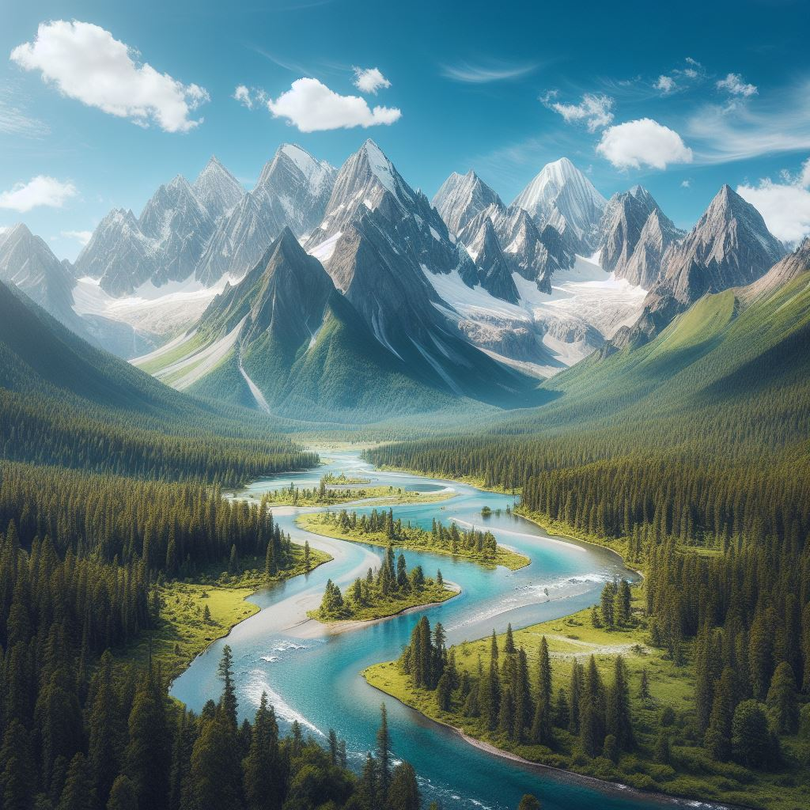
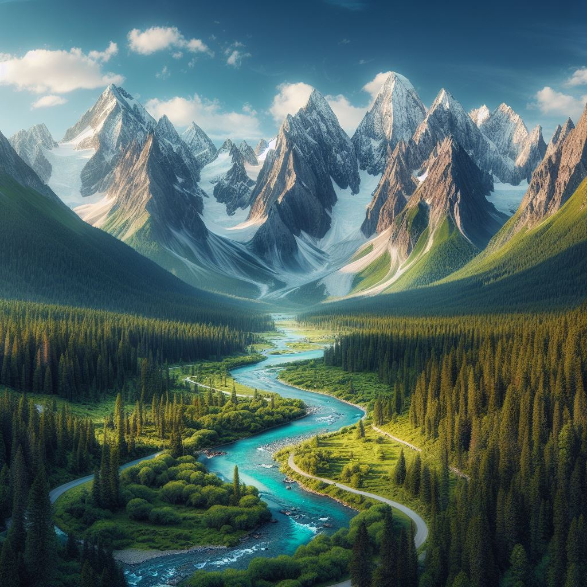
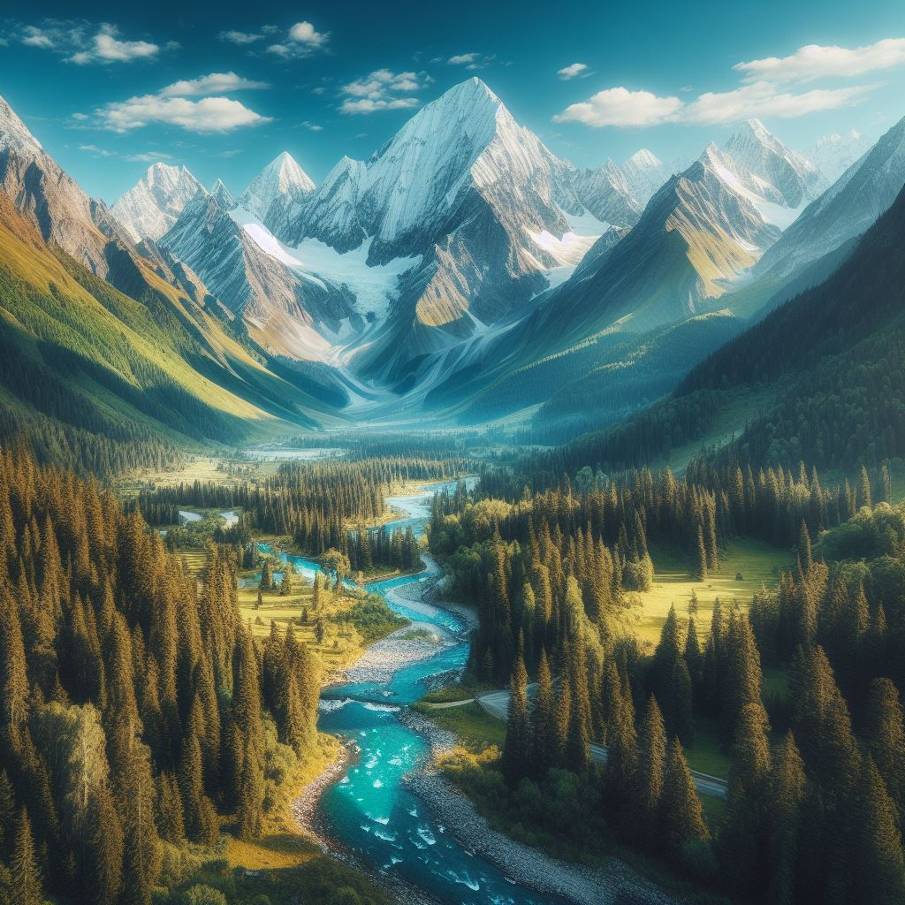

Nepal, situated in the heart of the Himalayas, is home to some of the world's most stunning mountain landscapes. From the iconic peak of Mount Everest to the diverse trails of the Annapurna and Langtang regions, Nepal offers a unique blend of natural beauty and cultural richness.
 The mountainous areas showcase alpine meadows, dense forests, and traditional villages. Trekking through these regions provides not only a physical adventure but also a spiritual journey, surrounded by the awe-inspiring grandeur of the Himalayas. Rhododendron blossoms in spring add a burst of color to the landscapes, creating a captivating experience for visitors.
Immerse yourself in the rich cultural heritage, witness ancient customs, and feel the warmth of hospitality as you explore the mountain areas of Nepal.